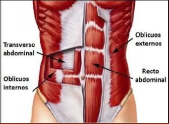

El músculo abdominal humano está compuesto por varios grupos de músculos que se encuentran en la región del abdomen y la parte frontal del tronco. Estos músculos son esenciales para mantener la estabilidad del cuerpo, apoyar la columna vertebral y realizar movimientos como la flexión del tronco y la rotación. Los principales músculos abdominales son:

- Músculo recto abdominal: Es el músculo más conocido y se extiende verticalmente a lo largo de la parte frontal del abdomen. Se compone de varios segmentos musculares llamados "líneas" o "tabletas" y es responsable de la flexión del tronco, como cuando haces abdominales.
- Músculo oblicuo externo: Está situado en los lados del abdomen, debajo del músculo recto. Se extiende desde las costillas hasta la cadera y es responsable de la flexión lateral y rotación del tronco.
- Músculo oblicuo interno: Se encuentra justo debajo del oblicuo externo y tiene una orientación opuesta. También contribuye a la flexión lateral y rotación del tronco.
- Músculo transverso abdominal: Es el músculo más profundo de los abdominales y se extiende horizontalmente a lo largo del abdomen. Actúa como un corsé natural que brinda estabilidad a la columna vertebral y ayuda a mantener una buena postura.